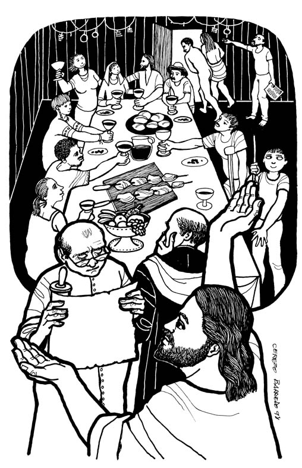
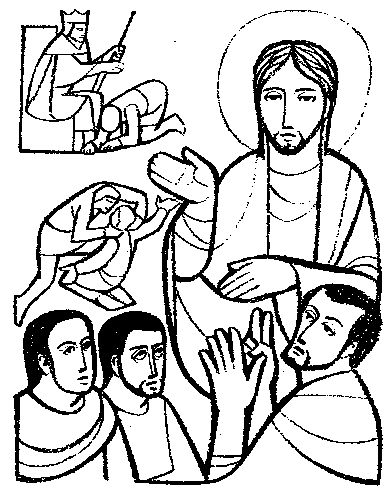
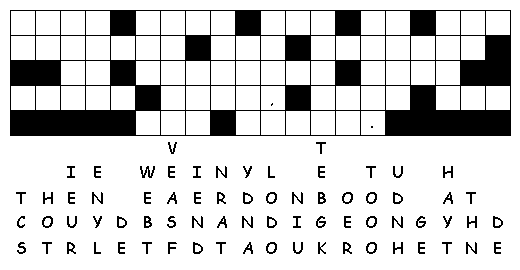
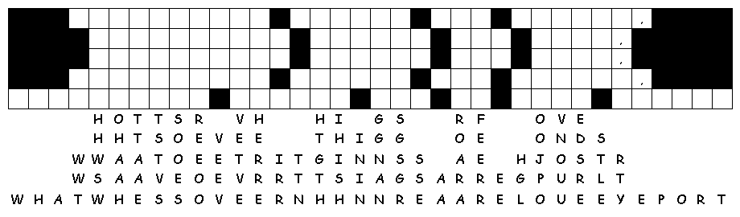

www.logrus.ca Year
A
Proper 23
This week's lessons: Exodus 32:1-14 and Psalm 106:1-6, 19-2 • Isaiah 25:1-9 and Psalm 23 • Philippians 4:1-9 • Matthew 22:1-14
Opening prayer by leader, or invite another participant to pray, or use:
Almighty God, who has caused all Holy Scripture to be written for our learning, open our ears and hearts today to learn from your word and from one another, we ask in Jesus' Name. Amen
Set the calendar-clock to the right date. Pentecost is the season of the church's growth, beginning with Pentecost Day which is the birthday of the church, and continuing to the end of the church year.Its colour is green.
Today, the Gospel reviews for us the parable of the wedding banquet.
What was the sermon on? -
What was the Gospel lesson? -
Did anyone have any insights about...
1. Which of the Ten Commandments do you take absolutely literally? Are they easy to keep?
2. Which of the Ten Commandments seem more metaphorical, or in need of interpretation?
3. Which of the Ten Commandments do struggle most with keeping?
4. “Thou shalt not take the name of the Lord in vain” -- what is the traditional interpretation of this commandment, and what is your way of complying with it?
5. “Remember that thou keepest holy the Sabbath” -- what is the challenge of keeping this commandment in Calgary in 2017?
6. Thou shalt not commit adultery – how broadly or how narrowly should this commandment be interpreted?
.
What parallels do you see between this reading and the previous reading(s)?
What parallels do you see between this reading and the previous reading(s)?
What parallels do you see between this reading and the previous reading(s)?
What parallels do you see between this reading and the previous reading(s)?
Pew-work Hand-outs
“Pew-work” is like Home-work, except that it is done in the pews, instead of being done at home. Because it is focussed on the readings (as the sermon, presumably, also is) it can be done during the sermon to help the listener concentrate. Or, it can be done while waiting for everyone else to finish their communion. It isn't done during prayers, or hymns, or the readings, because
During Prayers, we pray
During Hymns, we sing
During the Readings, we listen

Cerezo Barredo's Lectionary illustrations -- http://www.servicioskoinonia.org/cerezo/dibujosA/51OrdinarioA28.jpg

Misioneros del Sagrado Corazón en el Perú: From http://www.mscperu.org/grafic/graficoslit/aTO/picAto/24_to_a.jpg
Unscramble the words:
The king sent some servants to tell the invited tusges ___________ to come to the banquet, but the guests refused. He sent other servants to say to the guests, "The enbqtau ___________ is ready! My cattle and prize calves have all been prepared. Everything is ready. Come to the banquet!"
But the guests did not pay any ttnaentio ___________. Some of them left for their farms, and some went to their places of business. Others grabbed the serntsva ___________, then beat them up and killed them.
This made the king so riofusu ___________ that he sent an army to kill those murderers and burn down their city. Then he said to the servants, "It is time for the inewddg ___________ banquet, and the invited guests don't eedrves ___________ to come. Go out to the street corners and tell everyone you meet to come to the banquet."
1. Who is the
king in the
story?
_______________________________________________________________________
2. Who are the
servants in the
story?
_______________________________________________________________________
3. Who are the
guests in the
story?
_______________________________________________________________________
4. Who are the
other people in the
story?
_______________________________________________________________________
Questions taken from Sunday School Lessons; http://www.sundayschoollessons.com/baplord.htm

What are some of
the reasons we find it so hard to be satisfied when we have less than
we'd like to have?
__________________________________________________________________
_______________________________________________________________________
Do you find yourself "wanting" things that you don't really need? What might some of these things be?_______________________________________________________________________
_______________________________________________________________________
What makes you
want things you don't really need?
__________________________________
_______________________________________________________________________

|
What Scripture is the Sermon is based on? |
__________________________________ |
|
What is the main point of the Sermon? |
__________________________________ |
|
Write down any figures of speech used by the preacher (Metaphors, Similes, hyperbole) |
__________________________________ |
|
Write down any new, unusual or particularly interesting words the preacher uses |
_______________
|
Adult Student Pew-work
Focus Statement: “For many are called, but few are chosen.
|
_________________________________________ |
|
_________________________________________ |
|
_________________________________________ |
|
_________________________________________ |
|
_________________________________________ |
Next week: Exodus 33:12-23 and Psalm 99 • Isaiah 45:1-7 and Psalm 96:1-9, (10-13) • 1 Thessalonians 1:1-10 • Matthew 22:15-22